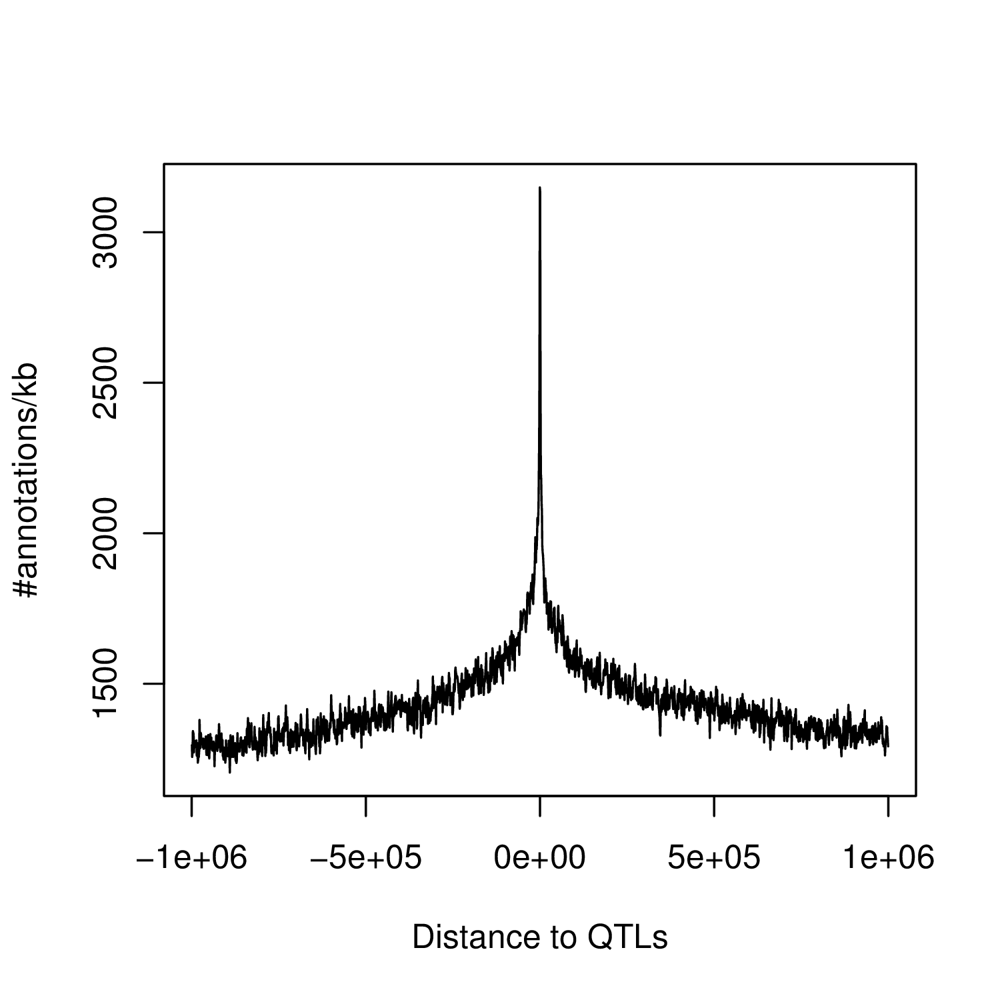

How to run fdensity?
This mode allows measuring the density of functional annotations around the positions of a collection of QTLs. To illustrate how it works, first download the required example data:
- The results from a full cis-analysis: TXT
- The functional annotation for few Transcription Factor Binding sites: BED
Step1: Prepare the QTL data
First, you need to prepare a BED file containing the positions of the QTLs of interest. To do so, extract all significant hits at a given FDR threshold (e.g. 5%):
Rscript ./script/runFDR.R results.genes.full.txt.gz 0.05 results.genes
Then, transform the significant QTL list into a BED file using the following command:
cat results.genes.significant.txt | awk '{ print $9, $10-1, $11, $8, $1, $5 }' | tr " " "\t" | sort -k1,1 -k2,2n > results.genes.significant.bed
The resulting BED file looks like this:
head results.genes.significant.bed
1 15210 15211 rs78601809 ENSG00000227232.4 -
1 735984 735985 rs12405651 ENSG00000177757.1 +
1 735984 735985 rs12405651 ENSG00000240453.1 -
1 739527 739528 rs3094317 ENSG00000237491.4 +
1 754963 754964 rs3131966 ENSG00000225880.4 -
1 769222 769223 rs60320384 ENSG00000228794.4 +
1 832397 832398 rs4553118 ENSG00000230699.2 +
1 844342 844343 rs61769715 ENSG00000223764.2 -
1 879675 879676 rs6605067 ENSG00000187634.6 +
1 895754 895755 rs113491766 ENSG00000187961.9 +
Note here that this file contains the follwing columns:
-
1. Chromosome ID
2. Start position of the QTL
3. End position of the QTL
4. QTL ID
5. Targeted phenotype ID (not used, can be whatever you want)
6. Strand orientation; this is important, you need to specify here on which strand the QTL has been mapped to
Step2: Run the density measurements
Now that you've got your QTLs ready to go, you can then measure the density using the following command:
QTLtools fdensity --qtl results.genes.significant.bed --bed TFs.encode.bed.gz --out density.TF.around.QTL.txt
This generates a file density.TF.around.QTL.txt that contains the number of functional annotations per 1kb bins around QTLs.
head density.TF.around.QTL.txt
-1000000 -999001 46
-999000 -998001 62
-998000 -997001 47
-997000 -996001 49
-996000 -995001 46
-995000 -994001 52
-994000 -993001 46
-993000 -992001 48
-992000 -991001 53
-991000 -990001 35
- 1. start position of the bin
- 2. end position of the bin
- 3. number of annotations in this bin
You can use the two following options to tune the calculations:
- --bin [int]: size of the bin in bp (default is 1000bp)
- --window [int]: size of the window around QTLs to be examined in bp (default is 1000000bp)
Once you've got your density measurements, you can plot them in R using:
R> D=read.table("density.TF.around.QTL.txt", head=FALSE, stringsAsFactors=FALSE)
R> plot((D$V1+D$V2)/2, D$V3, type="l", xlab="Distance to QTLs", ylab="#annotations/kb")
This is going to give you something like this:
